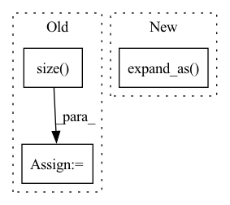

Pattern ID :2465

Before Change
def reverse_sort(x: torch.Tensor, dim: int) -> torch.Tensor:
new_indices = torch.empty_like(x)
new_size = [1] * dim + [x.size(dim)] + [1] * (x.ndimension() - dim - 1)
arange = torch._dim_arange(x, dim=dim).reshape(new_size).expand_as(x)
new_indices.scatter_(dim=dim, index=x, src=arange)
return new_indices
After Change
new_size = [1] * dim + [size] + [1] * (indice.dim() - dim - 1)
arange = indice.new_empty(size=new_size)
torch.arange(size, out=arange)
arange = arange.expand_as(indice)
new_indice = torch.empty_like(indice)
new_indice.scatter_(dim=dim, index=indice, src=arange)
return new_indice
In pattern: SUPERPATTERN
Frequency: 3
Non-data size: 3
Instances
Fragment ID: 10457242
Project Name: rick-mccoy/reformer-pytorch
Commit Name: 4a9cdeff95c63368659d9a6dfa09785a62bfc785
Time: 2020-01-30
Author: rickmccoy3141@gmail.com
File Name: model/attention.py
M Class Name: AnonimousClass
N Class Name: AnonimousClass
M Method Name: reverse_sort(2)
N Method Name: reverse_sort(2)
M Parent Class:
N Parent Class:
M File Name: model/attention.py
N File Name: model/attention.py
M Start Line: 15
M End Line: 19
N Start Line: 25
N End Line: 32
'>
Before Change
ht = hidden[-1]
c_global = ht
q1 = self.a_1(gru_out.contiguous().view(-1, self.hidden_size)).view(gru_out.size())
q2 = self.a_2(ht)
a = torch.tensor([1.]).to(self.device)
b = torch.tensor([0.]).to(self.device)
mask = torch.where(item_id_list>0, a, b)
q2_expand = q2.unsqueeze(1).expand_as(q1)
q2_masked = mask.unsqueeze(2).expand_as(q1) * q2_expand
alpha = self.v_t(torch.sigmoid(q1+q2_masked).view(-1, self.hidden_size)).view(mask.size())
c_local = torch.sum(alpha.unsqueeze(2).expand_as(gru_out)*gru_out, 1)
After Change
// fetch the last hidden state of last timestamp
c_global = ht = self.gather_indexes(gru_out, interaction[self.ITEM_LIST_LEN] - 1)
mask = item_id_list.gt(0).unsqueeze(2).expand_as(gru_out)
q1 = self.a_1(gru_out)
q2 = self.a_2(ht)
q2_expand = q2.unsqueeze(1).expand_as(q1)
alpha = self.v_t(mask * torch.sigmoid(q1 + q2_expand))
'>
Fragment ID: 10457241
Project Name: rucaibox/recbole
Commit Name: ba22a2f7c50691f00501db48c524afeacca7d3fb
Time: 2020-09-15
Author: houyupeng@ruc.edu.cn
File Name: recbox/model/sequential_recommender/narm.py
M Class Name: NARM
N Class Name: NARM
M Method Name: forward(2)
N Method Name: forward(2)
M Parent Class: SequentialRecommender
N Parent Class: SequentialRecommender
M File Name: recbox/model/sequential_recommender/narm.py
N File Name: recbox/model/sequential_recommender/narm.py
M Start Line: 59
M End Line: 87
N Start Line: 67
N End Line: 80
'>
Before Change
self.norm = torch.nn.BatchNorm1d(n_dim)
def forward(self, x):
x_ = x.view(-1,x.size(-1))
x_normed = self.norm(x_)
x_p = torch.sigmoid(self.beta * x_normed)
print(x_p.shape)
output = (1.0-x_p) * x_ * self.alpha + x_p * x_
output = output.view(*x.shape)
return output
// class FeedForwardAttention(torch.nn.Module):
After Change
var_x = torch.var(x, dim=-1, keepdim=True)
x_std = (x - mean_x) / (torch.sqrt(var_x + self.epsilon))
p_x = torch.sigmoid(x_std)
f_x = p_x * x + (1-p_x) * x * self.weight.expand_as(x)
return f_x
def extra_repr(self) -> str:
return "num_parameters={}".format(self.num_parameters)
'>
Fragment ID: 10457237
Project Name: ustcml/recstudio
Commit Name: 41eaf8d3306045061591f4cd83d488cbd9afb1ed
Time: 2022-08-21
Author: angus_huang@mail.ustc.edu.cn
File Name: recstudio/model/module/layers.py
M Class Name: Dice
N Class Name: Dice
M Method Name: forward(2)
N Method Name: forward(2)
M Parent Class: torch.nn.Module
N Parent Class: torch.nn.Module
M File Name: recstudio/model/module/layers.py
N File Name: recstudio/model/module/layers.py
M Start Line: 337
M End Line: 343
N Start Line: 390
N End Line: 395